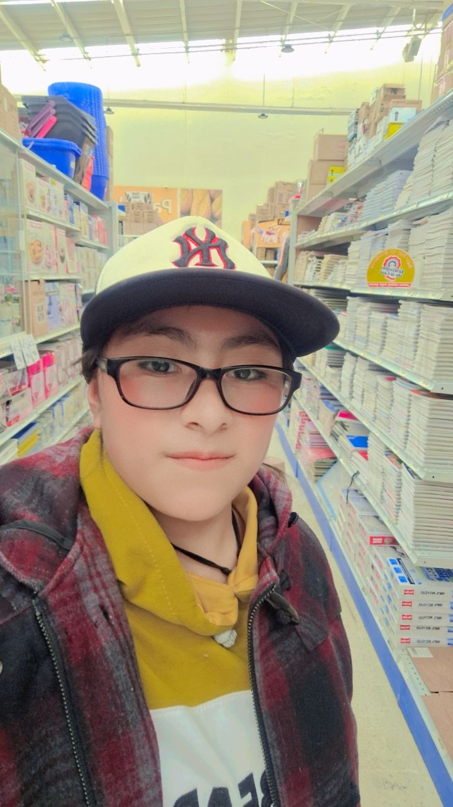

|
|||||||||||||||||||||||||||||||||||||||||||||||||||||||||||||||||||||||||||||||||||||||||||||||||||
| Colegio de Estudios Cientificos Y Tecnologicos Del
Estado de Mexico Plantel Ixtlahuaca Módulo III:Desarrolla Páginas Web Submódulo 2: Desarrolla aplicaciones que se ejecuten en el cliente Submódulo 3: Desarrolla aplicaciones que se ejecuten en el servidor Elaborado por: ODALIZ MARGARITA RUIZ BALDERAS Grupo:402 |
|||||||||||||||||||||||||||||||||||||||||||||||||||||||||||||||||||||||||||||||||||||||||||||||||||
| La empatia implica "ponerse en los zapatos del otro", tener la capacidad de responder a las alegrias y sufrimientos de los demas y expermientar regocijo ante su bienestar. Al desarrrollarla, a los estudiantes les resulta mas facil escuchar, comprender y dar apoyo a los demas, aunque no compartan ideas o situaciones de vida. La empatia los ayuda a ser mas inclusivos y entender que, sin importar la diferencias, pueden compartir varios aspectos de sus vidas con otros y sentirse tambien comprendidos por ellos | |||||||||||||||||||||||||||||||||||||||||||||||||||||||||||||||||||||||||||||||||||||||||||||||||||
| En una ocasión tiempo atrás cuando tenia 10 años el 1 de julio de 2017 fui a una competencia de banda de guerra, en esa competencia se encontraban las bandas profesionales de alto nivel y mayores que yo, yo por el contrario era las mas chica e iba en representación de 3 bandas de guerra una banda de guerra primaria, igual primaria , una de bachillerato y universitaria, participe en cada una de ellas y por el esfuerzo que di logre llegar a las competencias mayores teniendo 10 años, cuando termino la presentación de cada una llego mi turno de representarlas yo sola, cuando me fui inscribir para el concurso individual categoría a ( en la categoría a solo pueden entrar los mas avanzados que tiene que realizar una rutina donde demuestren su fuerza, agilidad, valentía, honor, disciplina, entre otras cosas ) unos de los participantes me dijo que me avía equivocado de lugar y que era demasiado pequeña para a ver estado en una competencia muy importante que si me metía a concursar aria el ridículo y que nunca me lo perdonaría, bueno en ese momento me entro un poco de miedo pero no deje de me destruyeran mi sueño así que me inscribí, y solo dije eso veremos, le di la espalda y me fui a prepararme, cuando ya empezaron a llamar a todos los participantes de categoría a, fui una de las primeras en formarme y la ultima en participar por que creían que me avía equivocado de lugar los jueces me preguntaban si no me avía equivocado y yo les decía que no pero dudaban así que me dejaron asta al ultimo, el primer participante fue el que me juzgo por mi estatura y mi edad, admito que si me gustaron sus toques pero no tenia la fuerza necesaria y abecés se le caía las baquetas, paso como 2 horas asta que, me toco mi turno en pese con mi rutina diciendo en vos alta un lema el éxito de la vida no es estar en vencer siempre si no en no rendirse jamás y empecé a tocar con todas mis fuerzas toda mi rutina cuando termine todos los del jurado se juntaron y se pusieron a dialogar como 5 minutos, luego nos dijeron que no fuéramos a descansar y a prepara para la entrega el 1er lugar, el 2do lugar y el 3er lugar, mi maestro se acercó a mi y me felicito por el esfuerzo que di en la competencia y me llevo a curar mis manos que me salieron varias ampollas y fui a comer con todos mis compañeros, después de todo eso nos fuimos a formar para el sierre de la competencia entregando los lugares, pasaron 2 horas para la entrega porque primero fueron los de categoría b nivel bajo , después categoría c nivel medio y por ultimo categoría a nivel alto, empezaron a entregar de 3er lugar fueron tres participantes mayores que yo, luego los de 2do lugar en esta solo fueron dos participantes y por ultimo lugar el 1er lugar en esta solo iba ser un participante tardaron un poco en decirlo pero mientras el participante que me juzgo se acercó a mi y me dijo distes todo lo que pudiste suerte a la próxima, pasaron 5 segundos y dijeron mi nombre ( el 1er lugar es para Odaliz margarita ruiz balderas ) todos mis compañeros me empujaron Asia enfrente y me echaban porras, pero no era todo me entregaron 2 cuadros de reconocimiento, uno por a ver obtenido el 1 lugar como mejor cabo cajero en la participación individual como categoría a ( nivel alto ) y el otro mejor cabo cajero primaria “b” ,pero por a ver obtenido el primer lugar me gane unas vaquetas , en un solo día me otorgaron 2 reconocimientos, unas vaquitas y un 1er lugar , en esos momentos no lo podía creer me puse muy feliz y me puse a llorar ,después de eso, se acercaron a mi todos los que me juzgaron y me pudieron disculpas yo solo creía que uno me avaí juzgado pero pare no fue así, les acepte sus disculpas y me fui a recoger mis cosas para irnos, y nunca creí que ese día seria la ultima competencia a la que iría | |||||||||||||||||||||||||||||||||||||||||||||||||||||||||||||||||||||||||||||||||||||||||||||||||||
.jpeg) |
 |
||||||||||||||||||||||||||||||||||||||||||||||||||||||||||||||||||||||||||||||||||||||||||||||||||